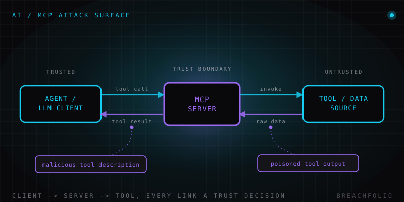

MCP (Model Context Protocol): la nueva superficie de ataque para desarrolladores.
MCP hace que conectar un LLM a tu sistema de archivos, tus bases de datos o tus APIs sea trivial. Esa comodidad es exactamente la superficie de ataque: esto es lo que deberías comprobar de verdad antes de instalar un servidor.
El Model Context Protocol, o MCP, es un protocolo abierto –originado en Anthropic y adoptado desde entonces de forma mucho más amplia en toda la industria– para estandarizar cómo una aplicación de IA se conecta con el mundo exterior. En concreto: en lugar de que un cliente de chat, un asistente de IDE o un agente autónomo envíen cada uno su propio código de integración a medida, hecho una sola vez para cada sistema de archivos, base de datos o API que necesiten tocar, MCP define una forma común de que un «cliente» (la aplicación que aloja el modelo) hable con un «servidor» (un pequeño programa que expone al modelo un conjunto concreto de herramientas, fuentes de datos u otro contexto).
Es fácil ver el atractivo, honestamente, porque resuelve un problema real. Antes de que existiera un estándar compartido como este, cada integración de herramientas era código pegamento a medida –autenticación distinta, formatos de datos distintos, modos de fallo distintos– reescrito para cada proveedor de modelos y cada aplicación que quería la misma capacidad. MCP convierte eso en algo más parecido a un patrón de plugins: escribe un servidor que exponga «leer archivos de este directorio» o «consultar esta base de datos», y cualquier cliente compatible con MCP puede conectarse a él. Eso es una victoria genuina de ingeniería. También es, estructuralmente, un nuevo lugar donde se negocia la confianza cada vez que se establece una conexión.
Por qué estandarizar la conexión es también estandarizar el riesgo
Cuando cada integración era a medida, un atacante que quisiera abusar de una tenía que entender tu código pegamento específico –tu envoltorio de API concreto, tu forma concreta de trasladar datos al contexto del modelo–. Esa heterogeneidad era una seguridad accidental por oscuridad, y no algo en lo que nadie debiera haber confiado, pero sí significaba que una técnica de ataque rara vez se trasladaba limpiamente de un sistema al siguiente.
Una vez que las integraciones siguen un protocolo compartido, eso deja de ser cierto. Una técnica que explote una debilidad en la forma en que los servidores MCP manejan habitualmente las descripciones de herramientas, o en la forma en que los clientes muestran habitualmente la salida de las herramientas de vuelta al modelo, puede generalizarse a todos los servidores construidos de la misma manera, no solo a una integración a medida. Esto no es un defecto exclusivo de MCP; es el compromiso que hace todo esfuerzo de estandarización. Los formatos comunes y los protocolos comunes son lo que hace posible la interoperabilidad, y son exactamente lo que hace que una única técnica de ataque sea portable entre muchas implementaciones a la vez. TCP/IP, HTTP y USB hicieron todos este mismo compromiso antes que MCP. La lección no es «no estandarices», sino que el trabajo de seguridad tiene que ocurrir a nivel de protocolo y de implementación, y no dejarse a que cada integración lo reinvente.
Dónde reside el riesgo real
Un servidor MCP entra dentro de la frontera de confianza en cuanto lo conectas: puede moldear lo que el modelo ve y lo que se le indica hacer a continuación. En la práctica aparecen sistemáticamente cuatro categorías de riesgo:
| Vector de ataque | Qué aspecto tiene | Mitigación principal |
|---|---|---|
| Servidores MCP maliciosos o comprometidos | Un servidor puede describir sus propias herramientas al cliente y devolver datos arbitrarios como resultado de una llamada – ambas cosas pueden colar instrucciones dentro de lo que parece una salida corriente. Es una variante específica del protocolo de la inyección de prompts indirecta: el atacante nunca habla directamente con el modelo, controla algo que este lee a través de un canal en el que se le dijo que confiara. | Revisar el código; monitorizar y registrar qué herramientas se llaman realmente. |
| Concesiones de permisos demasiado amplias | Un servidor conectado una vez para una tarea acotada –digamos, leer un archivo de configuración– acaba a menudo con acceso permanente a todo un sistema de archivos, base de datos o alcance de API, porque eso es lo que ofrecía la conexión por defecto y nadie volvió a acotarlo. | Acotar los permisos al mínimo que la tarea necesite. |
| Riesgo de cadena de suministro por servidores de terceros sin auditar | Conectarte a un servidor que encontraste en internet y no escribiste tú es, en términos de seguridad, cercano a instalar un paquete npm sin revisar o una extensión de navegador: las intenciones y competencia de su autor pasan a formar parte de tu frontera de confianza. | Preferir mantenedores con trayectoria. |
| Aislamiento (sandboxing) débil en servidores locales | Muchos servidores MCP se ejecutan como procesos locales corrientes, con los mismos privilegios que el usuario que los arrancó: acceso completo a archivos, credenciales y red, no un subconjunto reducido y aislado. | Ejecutar servidores no confiables en un entorno aislado o en contenedor. |

Qué comprobar de verdad antes de conectar un servidor
Nada de esto es exótico una vez que lo planteas correctamente: un servidor MCP es código de terceros al que estás concediendo acceso a tu máquina o a tus datos, y merece exactamente el mismo escrutinio que le darías a cualquier otro trozo de código de terceros en esa posición.
- Revisa el código fuente si es abierto. Si no puedes o no vas a leer el código, trátalo como un coste real de usar el servidor, no como un trámite que saltarse.
- Prefiere servidores de mantenedores en los que realmente confíes –un proyecto u organización consolidados con trayectoria– antes que un script sin verificar de una fuente desconocida.
- Acota sus permisos al mínimo que la tarea necesite en lugar de aceptar cualquier acceso por defecto que el servidor pida. Si solo necesita acceso de lectura a un directorio, no le concedas toda tu carpeta personal.
- Ejecuta los servidores no confiables en un entorno aislado (sandbox) o en contenedor, de modo que un servidor comprometido o que se comporte mal no pueda llegar más lejos de lo previsto, aunque lo intente.
- Monitoriza y registra qué herramientas se llaman en realidad y con qué argumentos, para tener algo que examinar después en lugar de limitarte a confiar en que se comportó bien.
Esto es seguridad agéntica, una capa más abajo
Nada de esto es un problema separado del que se trata en los fundamentos de seguridad de la IA agéntica. Ese artículo habla en abstracto de lo que ocurre una vez que un agente obtiene acceso a herramientas y puede tomar acciones en el mundo: el riesgo de herramientas con permisos excesivos, la necesidad de aprobación humana en las acciones de consecuencia, la importancia de registrar lo que un agente hizo realmente. MCP es uno de los mecanismos concretos por los que un agente obtiene ese acceso a herramientas en primer lugar. Cada servidor MCP que conectas es una concesión de herramienta, y las mismas mitigaciones se aplican directamente, solo que acotadas a una pregunta concreta: ¿qué servidores MCP están conectados ahora mismo, y qué puede tocar realmente cada uno de ellos? Si ya piensas en los permisos de los agentes en términos de privilegio mínimo y de puertas de aprobación, conectar un servidor MCP es donde ese pensamiento tiene que aplicarse de verdad, no solo reconocerse.
Los protocolos que facilitan la integración siempre hacen que las fronteras de confianza sean más fáciles de difuminar; eso no es una crítica específica de MCP, es lo que ocurre siempre que «conectar cualquier cosa con cualquier cosa» se convierte en una acción de un clic en lugar de una decisión deliberada. Tratar cada conexión MCP como una decisión real de control de acceso, y no como una comodidad de un clic, es toda la mitigación en una sola frase.
Preguntas frecuentes
¿Qué es el Model Context Protocol (MCP)?
¿Por qué estandarizar las conexiones de un agente también estandariza el riesgo?
¿Qué debería comprobar alguien antes de instalar un servidor MCP de terceros?
¿Es MCP inseguro por diseño?
Daniel A. y Óscar S. llevan Breachfolio, un sitio pequeño e independiente sobre seguridad e IA. Este artículo se redactó con asistencia de IA y una persona lo revisó antes de publicarlo. Escribimos a partir de documentación, fuentes de los fabricantes e investigación publicada, no de pruebas de laboratorio propias, y enlazamos la fuente en la propia frase que se apoya en ella. Cómo trabajamos · Quiénes somos